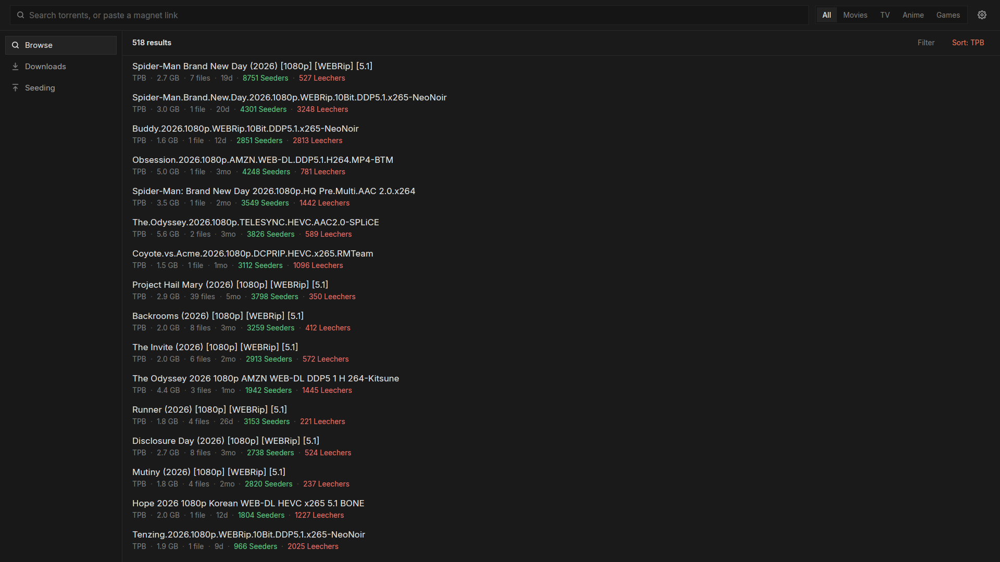
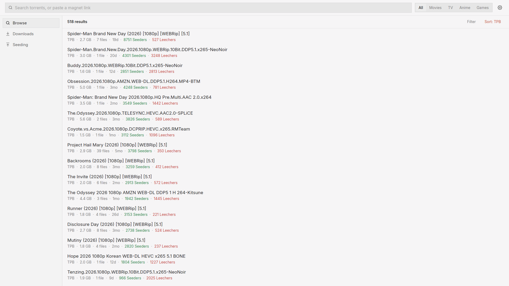

Every Torrent.
One native window.
Search indexers in parallel. Stream results as they arrive. Download natively. No browser, no account, no middleman.


Search everywhere
Query public indexers in parallel. Results appear as they arrive.
Know before you download
See seeders, leechers, size, age and more. Filter, sort and hide dead torrents.
A real native engine
Downloads run through librqbit with DHT support. No browser, no HTML.
Your queue, restored
Downloads survive restarts. Pause, resume or remove them anytime.
Seeding on your terms
Control seeding per torrent or set time limits. Your files stay accessible.
Keyboard first, local always
Navigate with single keys. No accounts, no telemetry, no middleman.